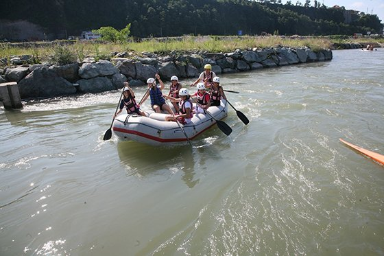

Rize dik yamaçlı vadileri, doruklara ulaşılabilir dağlan, buzul gölleri, zümrüt yeşili yaylaları, tarihi kemer köprüleri ve kaleleri, coşkun akan dereleri ile çok özel bir turizm beldesidir. Kano, deltaplan, dağ, kayak, trekking gibi bir dizi hoby turizm etkinliğine uygun doğaya, güvenilir ve içtenlikli bir ortama sahiptir.
1-YaylalarKaçkar sıradağlarının eteklerinde, Çamlıhemşin, Hemşin ve İkizdere ilçelerinde yoğun biçimde yer alan yaylalar, iyi korunmuş özgün mimarili evleriyle bulutların ötesinde bir yaşam sunar izleyenlere. Bu yaylalardan ayder, Aşağı-Yukarı Kavron ve Anzer yaylaları Turizm Merkezidir. Bu yaylalar özellikle yaz aylarında yerli ve yabancı turistlerin uğrak yeri olur.
Kaçkar Dağları Türkiye'nin 4 büyük dağıdır. Alp dağları silsilesindendir. Yürüyüşler dağ tırmanışları, için uygun bir ortam oluşturur. Flora ve fauna olarak da çok özel bir yapıya sahiptir.

Rize derelerinde özellikle Fırtına ve İyidere'de karların eridiği zamanda "Kano" yapılmaktadır.
Doğu Karadeniz'in tek kaplıcası AYDER'dedir. Çok hastalığa iyi geldiği kanıtlanan kaplıca ilgi odağıdır. Ayrıca içmece olarak Rize zengindir. Özellikle ANDON içmecesi mide ve böbrek hastalıklarına iyi gelmektedir. Ikizdere Ilıca Köyünde de sıcak su sondaj çalışmaları devam etmektedir.
Bu bölge safari için en güzel doğal parkurlara sahiptir.